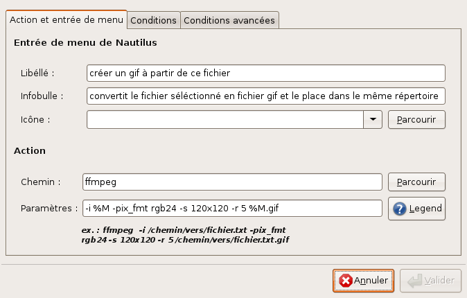
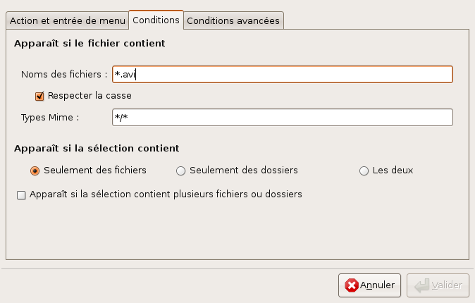

J'ai souvent vu des gens poser cette question : comment fait-on un gif animé à partir d'un film sous ubuntu? Avec ffmpeg, rien de plus aisé. Sous gnome, avec nautilus-actions, il vous sera même possible de faire clic droit>générer un gif animé à partir de cette vidéo. Commencez-donc par installer ffmpeg et nautilus-actions.
sudo apt-get install ffmpeg nautilus-actions
La syntaxe pour réaliser un gif animé à partir d'un film est
ffmpeg -i fichier_entree.avi -pix_fmt rgb24 \
-s 120x120\
-r 5\
fichier_sortie.gif
- Vous pouvez régler la hauteur et la largeur du fichier de sortie en touchant au paramètre '-s 120x120' (cependant 120x120 est une taille raisonnable pour les forums).
- Vous pouvez régler le nombre d'image par seconde prises dans le film d'origine en touchant au paramètre '-r 5'.
Bon, maintenant, offrons-nous la possibilité de gérer tout ça à coup de clic droit. Sous Ubuntu, si vous avez bien installé nautilus-actions, ça se passe dans système>préférences>configuration des actions de nautilus. Faites 'Ajouter'. Configurez la nouvelle action comme suit :
 
Ce qui est important, c'est le champ 'paramètres' :
-i %M -pix_fmt rgb24 -s 120x120 -r 5 %M.gif
Vous pouvez désormais vous amuser à faire toute sorte de gif animés. Le seul défaut : les fichiers produits ont le désavantage de ne pas boucler. Heureusement, il est très facile d'y remédier avec the gimp. Il suffit d'ouvrir le .gif, et de le ré-enregistrer en laissant cochée l'option 'boucle infinie'... Dans un prochain billet, je vous expliquerais comment couper votre vidéo pour extraire une scène qui vous intéresse. Ainsi, il vous sera possible de chainer les deux méthodes pour faire exactement le gif que vous voulez.
Comments !